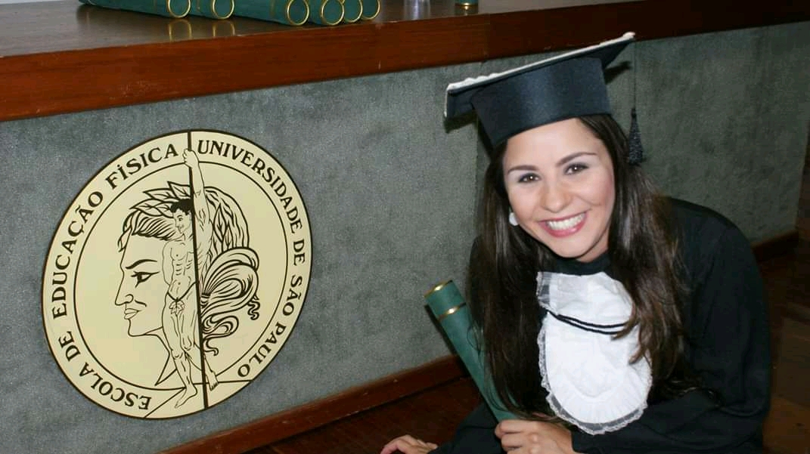

Natallia Bonadia
EEFE - USP
Entrei na EEFE - USP (Escola de Educação Física e Esporte da Universidade de São Paulo) em 2010 e me formei no final de 2013.
O curso de Bacharel em Esporte me proporcionou muitas experiências incríveis e me deu base para atuar com a atividade física em seus diversos formatos.
